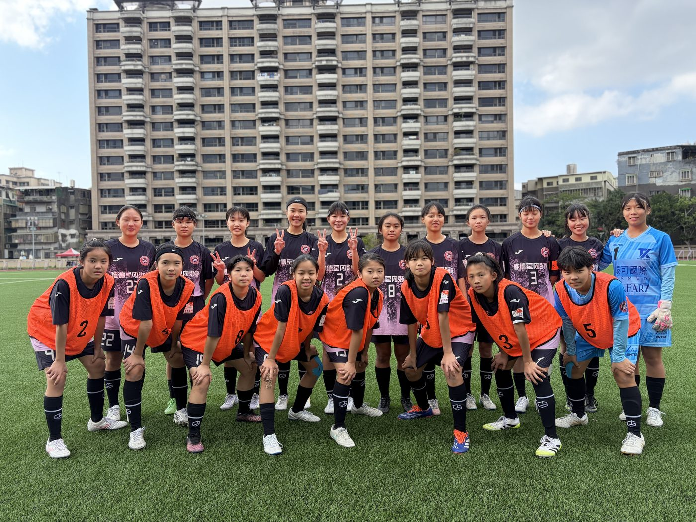
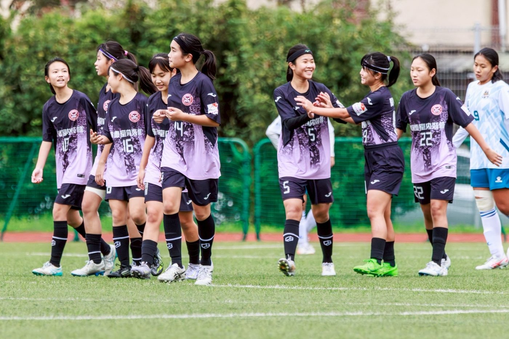
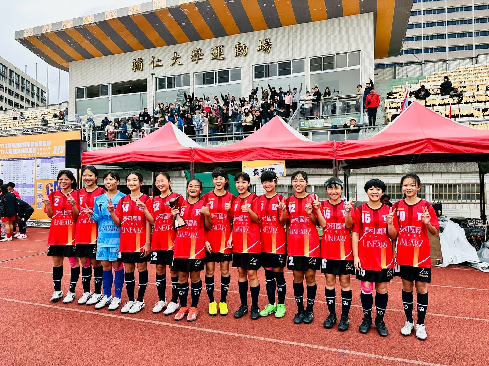

01我的故事
夢想人人可踢，新北自強女足隊！
新北市自強國中女子足球隊曾於2016年成立，並於2018年獲得中等學校五人制足球聯賽全國第三名，後因球員人數不足，所以停止招收女子足球隊隊員。2023年因學區內的新北市自強國小重新成立女子足球隊，因此鄰近的自強國中重新承接起女孩共同的心願-升學後可以一起踢球、一起唸書。
自強國中女子足球隊隊員散佈於普通班及美術班，利用晨間及放學後進行訓練，以不影響課業時間為原則。
感謝家長及校方對於足球隊的支持，讓學生在沒有後顧之憂的情況下展現自己的專長；此外女足隊員在課業表現十分優異，我們除了有校排前三名的學霸之外，也有來自美術班的藝術家，希望孩子可以多元發展不侷限自己的未來。
新一代的自強國中女子足球隊成立邁入第三個年頭，目前我們有19位隊員，在2024年、2025年青少年盃皆榮獲全國第三名外，2025年中等學校足球聯賽也榮獲全國第三名、2026年中等學校足球聯賽榮獲全國第二名，期待女孩們再創佳績，為自強女足寫下新的紀錄。



推薦理由
請支持性別平等與女性運動發展 ，女子運動仍相對資源不足，贊助女子足球隊能展現企業對性別平等與多元發展的重視，提升品牌形象，並實際幫助女孩獲得更多運動機會。